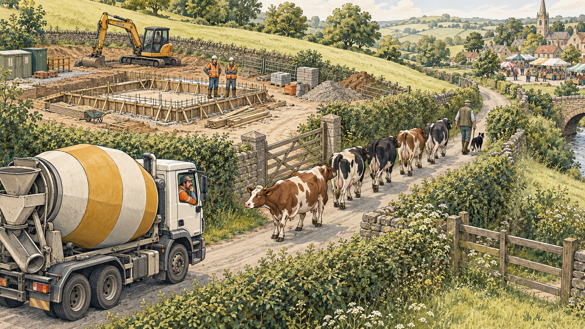
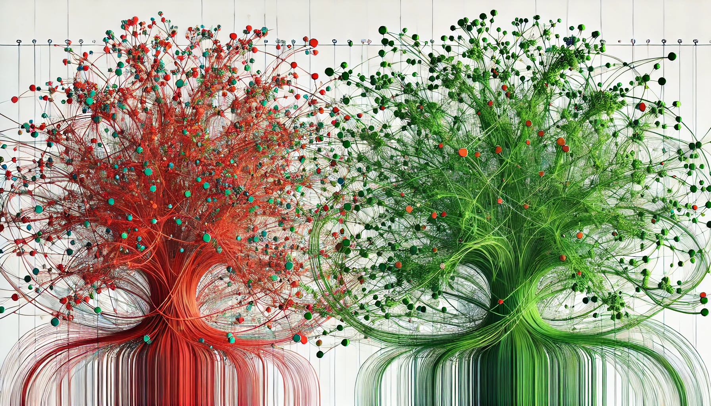
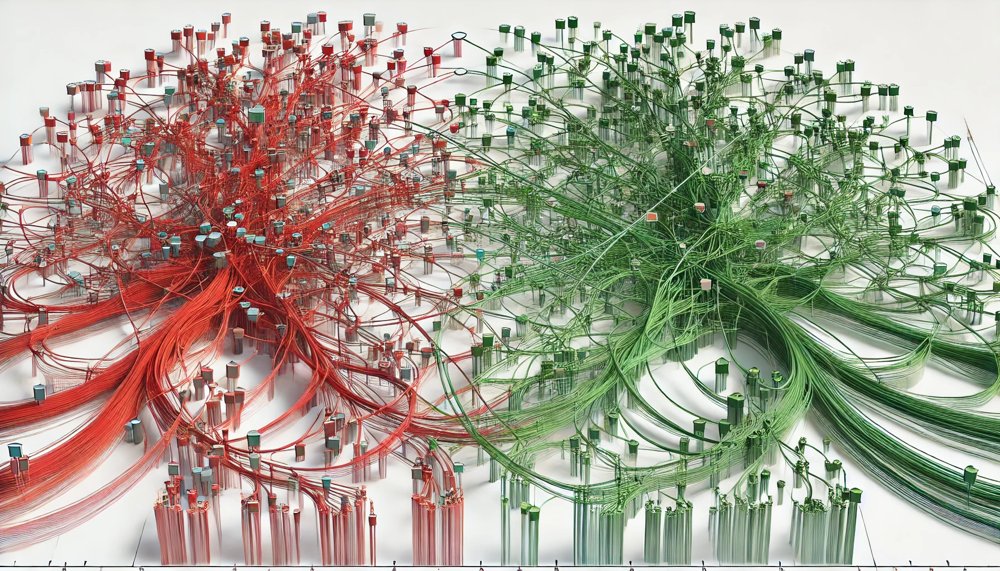
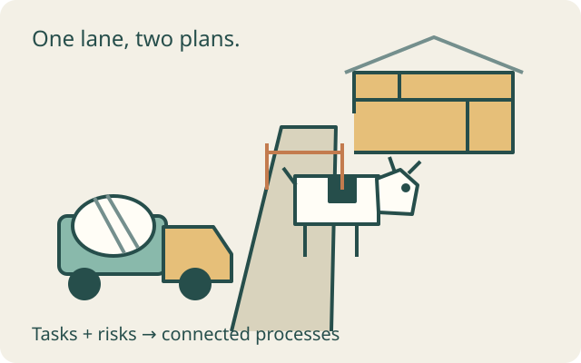
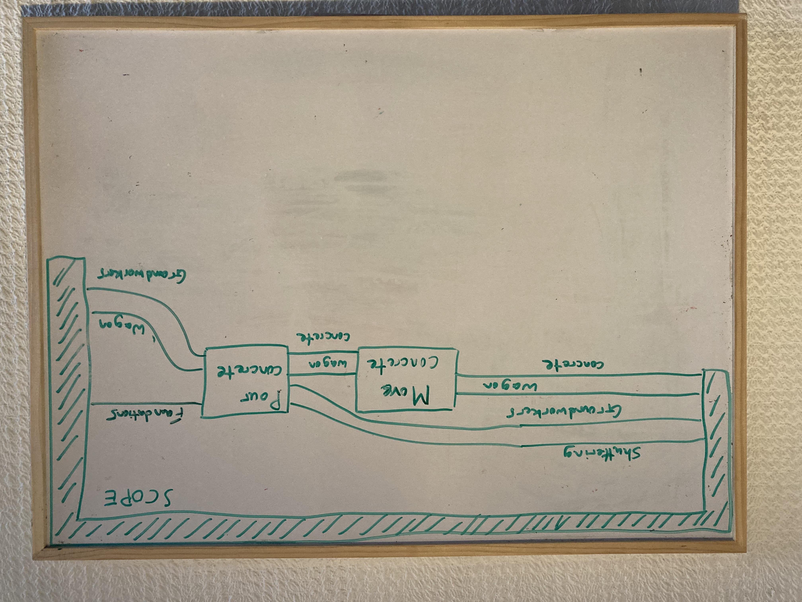
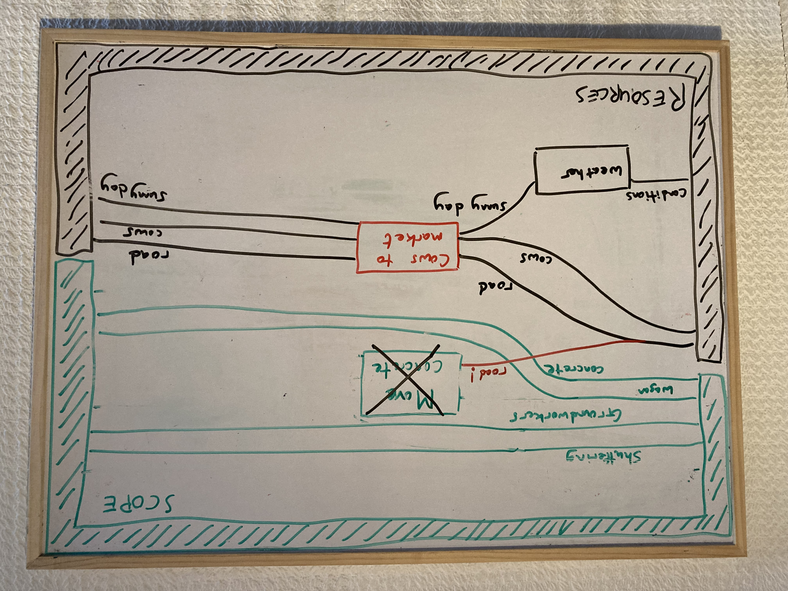
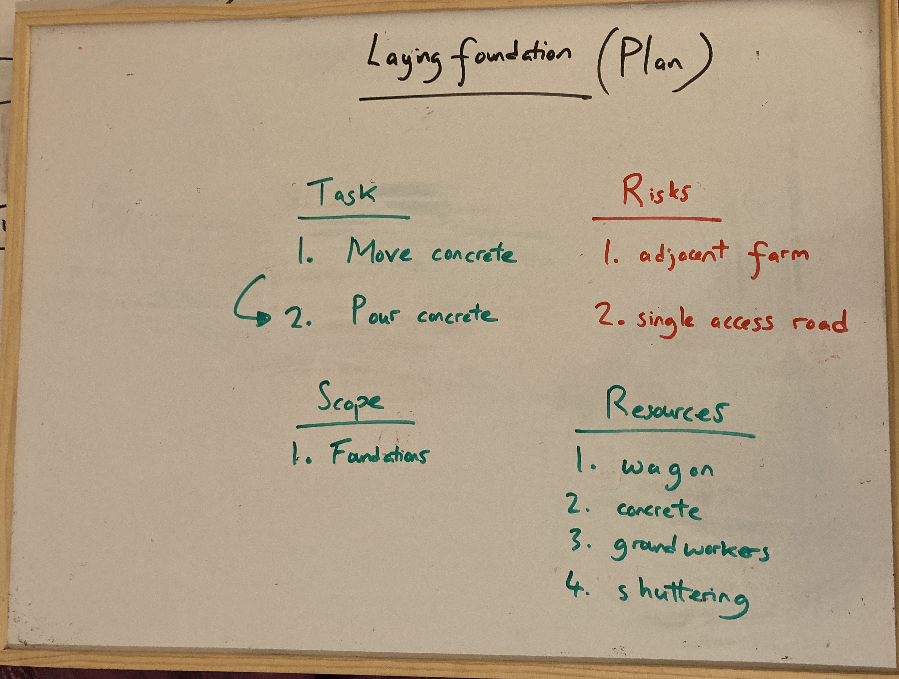
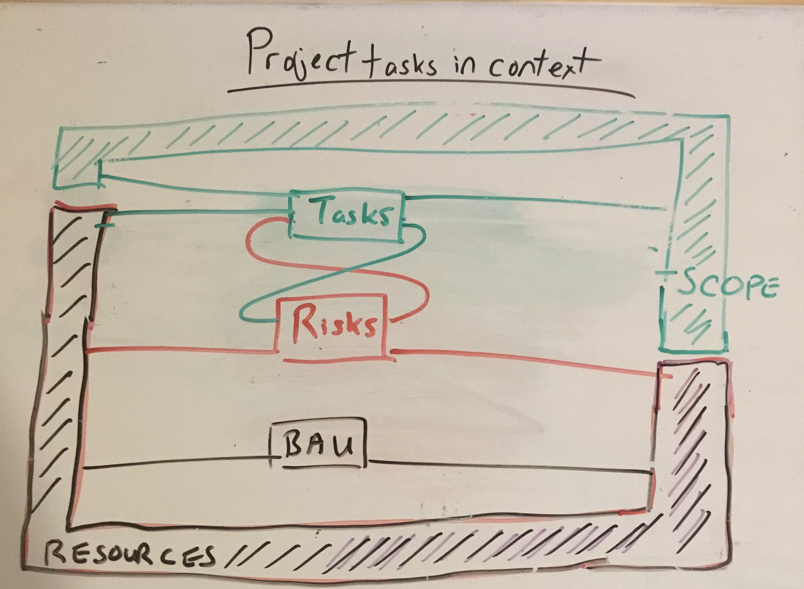

{kind=link}
{kind=link}
Boxes do things
Moving, pouring, preparing and walking cattle are processes. A box needs explicit conditions before it can run.
Portfolio Wave / Foray 165 / First exploration
The site needs concrete. The farmer needs to take cows to market.
Unfortunately, their plans share a farm track.

01 / The proposition
A schedule describes work we intend to do. A risk register describes uncertainty about what may affect our objectives. Both concern processes in the same world. Can we model their interactions together, then take the views we need?



Same kind of box; different relationships to the project.
“Deliver concrete” and “walk cattle along the lane” can both transform resources and conditions. Calling one a task and the other a threat tells us about intention and consequences—not a different law of composition.
Moving, pouring, preparing and walking cattle are processes. A box needs explicit conditions before it can run.
They carry typed resources or information. A resource’s current condition is part of the state; a wire is not, by itself, a complete state description.
Which uncertain process, timing or outcome could affect which objective, under which conditions? A red box alone does not answer that.
02 / Reconstructing the conceit
The earlier trail includes Lawrence’s 25 October 2024 post about viewing risks alongside tasks, a July 2024 delayed-trusses example, and the March 2025 processes-to-plans mandate. Links come from the archived export; visibility may require LinkedIn access. The older high/low-probability distinction is revised here: intention, uncertainty and effect are separate dimensions.
The original plan lists “move concrete” then “pour concrete”. The second sketch lets the surrounding world into that plan: weather, a farmer, cattle and a road that the project does not own outright.




03 / Try the shared resource
Every button applies the same kind of process rule. Start the cattle walk, then see why the delivery must wait. Preparing the shuttering can still proceed. Finish the walk and the delivery becomes available again.
This is a temporary exploration. Your changes stay in this page and reset on reload. No data is uploaded or saved.
The model explores all allowed start/finish interleavings for one delivery, one pour, one shutter preparation and at most one cattle passage. It supplies no frequencies, likelihoods or optimum policy.
04 / The mathematics you can see
The first diagram shows alternative enabled transitions. The second shows one chosen execution. A plan selects and times an execution; it cannot silently grant both users the same exclusive lane.
walk ; deliver is shorthand for lane order: the full typed composition also carries the other resource wires through, using identity wires and rearrangement. The released access passes into the next process. Reversing the order is another valid execution under this model. It may be better or worse for different people.
deliver ⊗ prepare uses separate resources. It means independent work can be placed side by side. It does not mean a single lane may be shared without an extra rule.
The process diagrams use the language of a symmetric monoidal category (SMC): typed inputs and outputs, composition, parallel combination and rearrangement of wires. The running model supplies concrete enabling rules. It is a small token-transition construction; this page does not implement an operad engine, optics, or a general open-net composition algorithm.
| Process | On starting: require / hold | On finishing: transform / return |
|---|---|---|
| Deliver | Free lane + loaded wagon (driver included) | Concrete at site + wagon at site + free lane |
| Walk cattle | Free lane + cattle waiting (farmer included) | Cattle clear of lane + free lane |
| Prepare shuttering | Free crew + unprepared shuttering | Ready shuttering + free crew |
| Pour | Delivered concrete + wagon + free crew + ready shuttering | Placed concrete + empty wagon + free crew; shuttering remains in place |
A resource “on finishing” is not free while its process is running. The wagon is unique and its phase is represented by the cargo state. Fixed process boundaries include the driver and farmer; their separate availability is not tracked. Curing, concrete expiry, traffic safety, return journeys and weather dynamics are outside this first model.
The lane order is a decision or agreement; the weather and market trip are not under unilateral project control. These witness schedules assume both users are ready at minute zero, delivery takes 10 minutes, cattle passage 15, shutter preparation 8 and pouring 12. The numbers are invented teaching values.
The cattle-first and delivery-first witnesses have the same completed processes and different timings. Neither is proved optimal or agreed in reality. A risk view should retain the competing demand and uncertainty; a chosen Gantt chart alone loses the unchosen alternatives.
05 / Correcting the set picture
The nested idea works for this selected task set if we make its universe and perspective explicit. Here, an “item” is a modelled process affecting the project, and a WBS task means the process implementing that task—not the WBS document or deliverable itself. Here “project actions” includes work deliberately commissioned by the project, not only work performed by its own staff. This conceptual picture is broader than the four-process explorer.
Coordination and mitigation may be deliberate project actions outside a particular WBS. A supplier’s separate maintenance can be desired by the project team without being commissioned project work. WBSs often organise deliverables, so the mapping to processes must be declared.
Threats are not confined to the project’s intended processes. Cattle passage is intended by the farmer; heavy rain need not be intended by anyone. A planned pour can itself threaten quality or safety. Intention and adverse effect cross-cut one another.
“Risk” is not simply another subset of physical processes. A risk description connects uncertainty to effects on objectives. We can draw the set of processes associated with threats, provided we say so. Opportunities are the corresponding favourable possibilities; one process can help one objective and harm another. Probability, controllability, ownership and whether an event has actually occurred need separate annotations.
Once cattle are observed on the lane, their presence is a current condition. Uncertainty may remain about how long they will take. A mitigation—agreeing a slot, changing a dispatch time—also belongs on the process map and can create new dependencies or threats.
06 / Why these methods, and where next?
Explore whether one compositional process account can connect project tasks, outside activities and their uncertain effects. The destination is reusable smaller blocks across projects; the cows are a deliberately small test.
Use process theories to focus on transformations; typed wiring to expose dependencies; resource-sensitive transition rules to expose competition; environment-aware thinking to challenge the chosen boundary.
The six original images, source-backed corrections, this finite explorer, alternative execution diagrams and timed witnesses. Keep a simpler resource table as the comparator.
A mathematical theory of resources supplies the process/resource perspective: transformations compose in sequence and in parallel. Here it motivates resource inputs and returns, not a rule allowing a road or crew to be copied.
In the collected “best” Dynamic project states cluster; published-paper pp. 63–67. Our lane capacity and event rules are a separate, declared construction.
Open cybernetics systems I: feedback systems as optics is the strongest match for the remembered surrounding bars. Its environment-comb picture wraps a system and includes ongoing environmental activity.
Collected under “best / 2nd tier”, Context section. The separate SCOPE and RESOURCES bars are Lawrence’s adaptation. This toy does not yet model an optic, feedback interface or controller. The related formal paper is Towards Foundations of Categorical Cybernetics.
Wiring diagrams as normal forms for computing in symmetric monoidal categories supplies typed ports, nesting and composition syntax. It motivates the visible process interfaces and the distinction between a diagram and what its boxes mean.
In “best / Project wiring diagrams”, §2.1. Its directed acyclic syntax does not automatically validate the feedback loops in the original context sketch. Compatible ports alone do not establish feasible timing.
Operadic Modeling of Dynamical Systems: Mathematics and Computation distinguishes directed interaction from undirected resource sharing. That distinction prevents confusing concrete transfer with two activities depending on the same road.
In “best / Project wiring diagrams”, introduction. The road persists; this implementation reserves a single access token. It does not implement the paper’s dynamical-system algebras.
Compositional Cyber-Physical Systems Modeling distinguishes systems from the interfaces through which they are connected. Here the driver, farmer and return journeys expose where a boundary has been chosen and what it leaves out.
In “best / Project wiring diagrams”, §2. These are boundary-design lessons; a material flow is not automatically the paper’s information-flow semantics.
Open Petri Nets explains how nets can expose boundaries for composition. The token diagram here is a small resource-sensitive net fragment. Gluing reusable farm-access components, with matching boundary semantics, remains a next step rather than an implemented feature.
Package “use a single shared access” as a reusable component; then substitute a crane, test rig or review panel. Compare what can be checked locally with what requires the joined model. Add uncertain timing and an explicit coordination process only when their semantics are clear. Judge the extra machinery by the conflicts or reusable checks it reveals, compared with a plain schedule and resource table.
What this first essay has established: within its declared toy rules, both stakeholder processes can be represented uniformly, exclusive access prevents an invalid overlap, and one process model permits several executions. It has not established a general risk theory, a scheduling optimum, a compositionality theorem, or usefulness on a real project.
Public foray & specificationSource trail & image correctionsArtwork provenanceNeighbour: Building a WallNeighbour: boundary contracts
{kind=link}
{kind=link}
{kind=link}
{kind=link}
{kind=link}